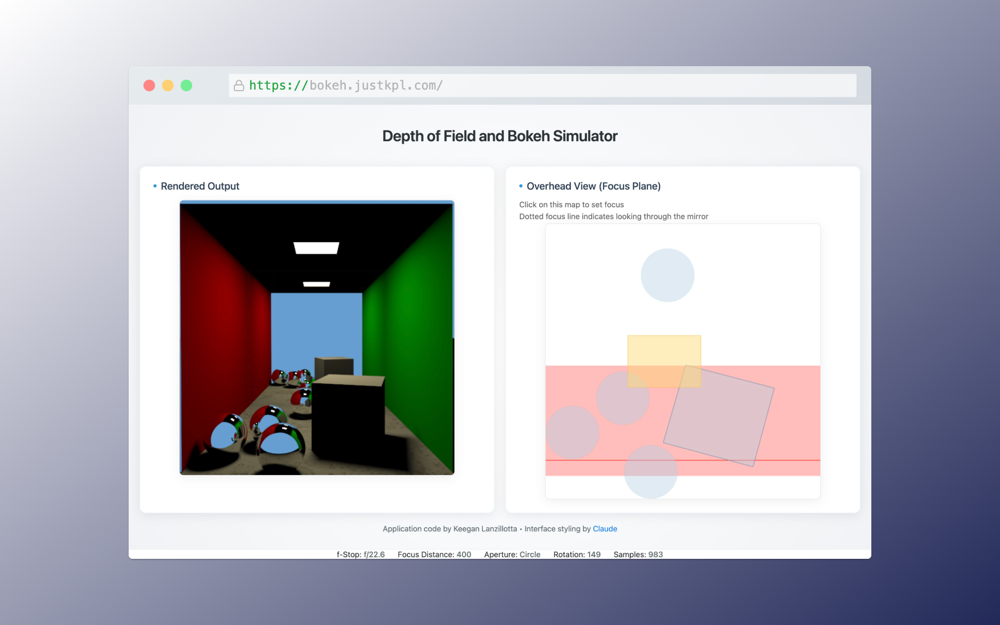
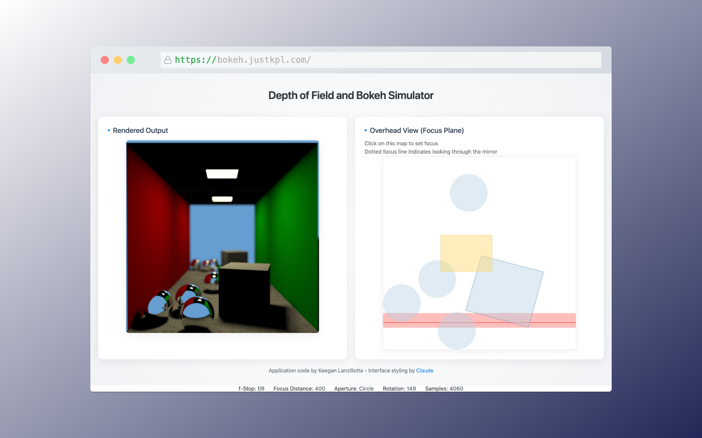
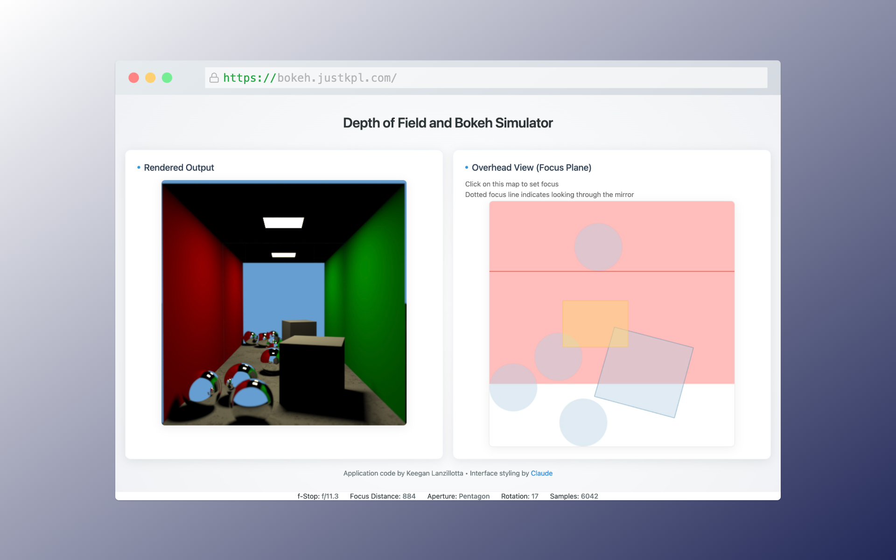
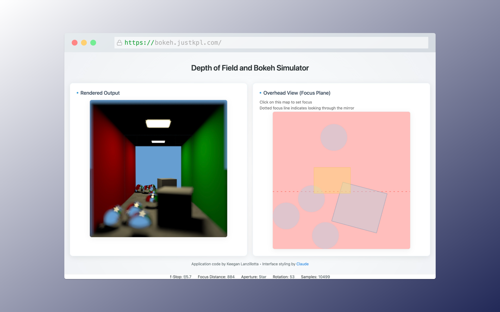
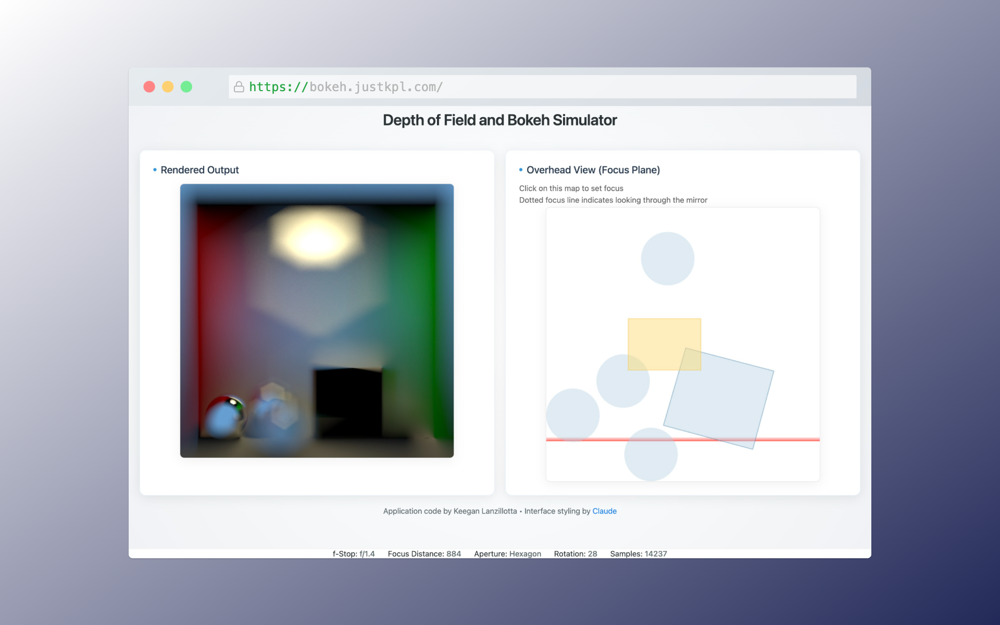
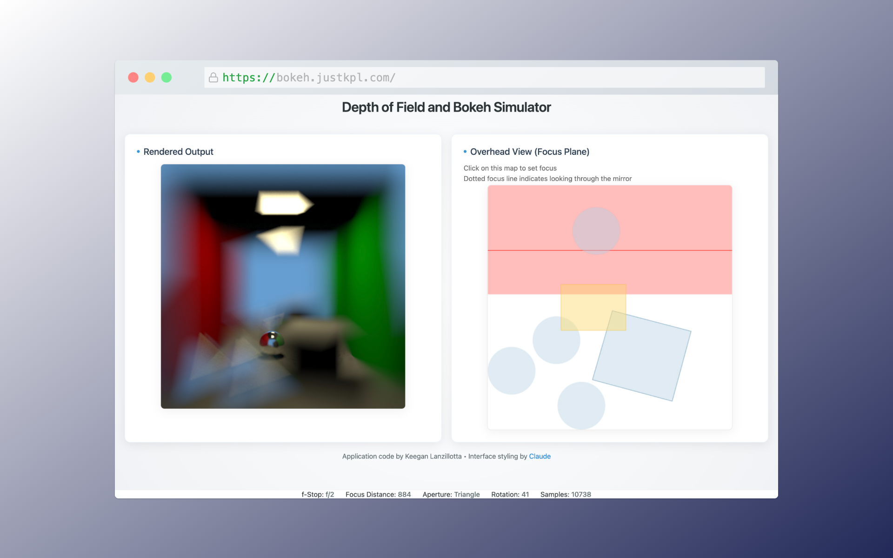
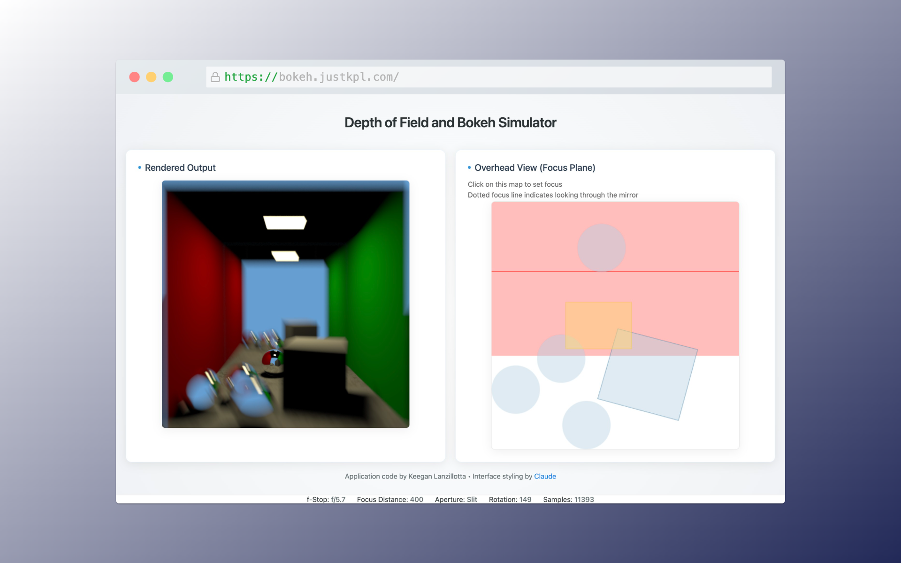
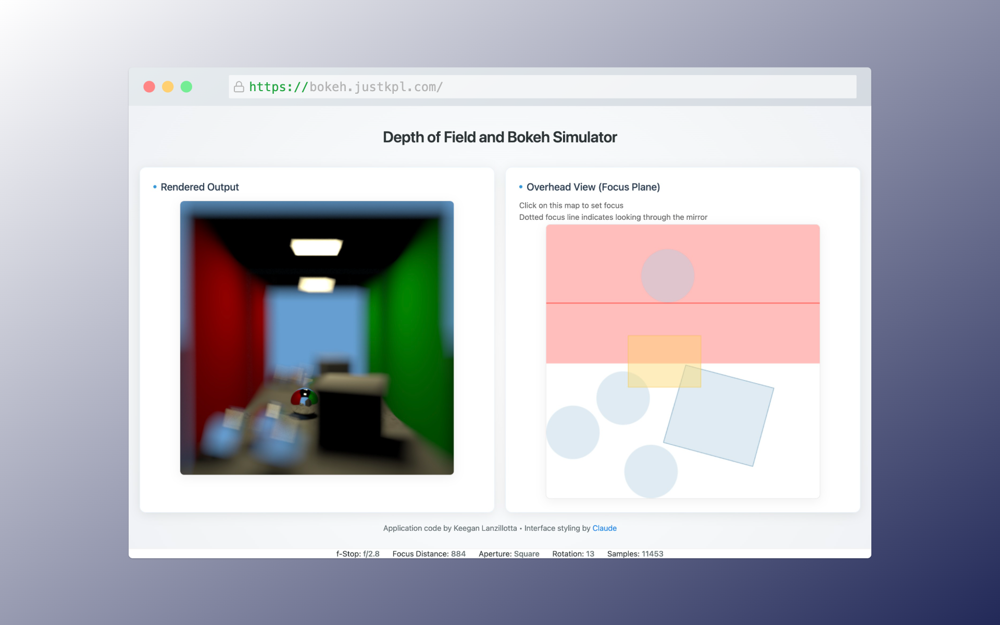
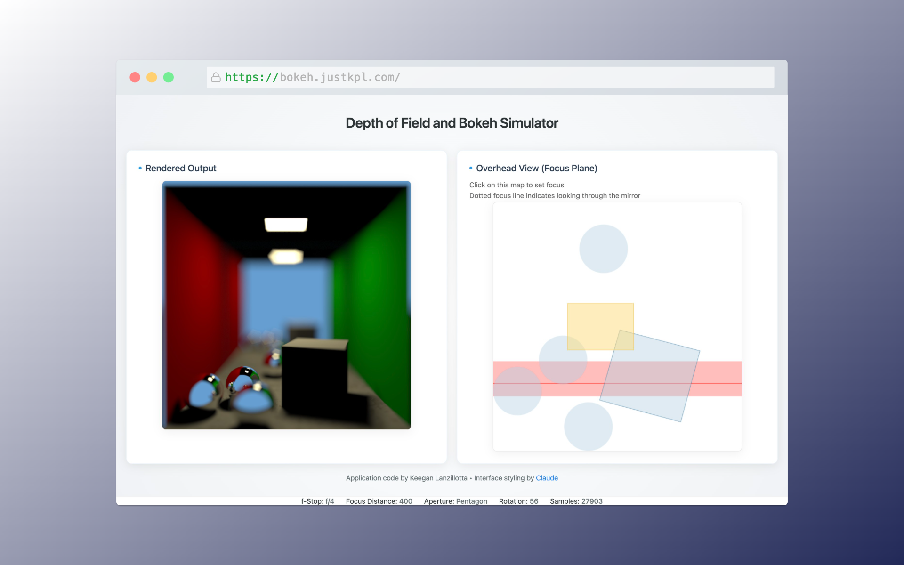
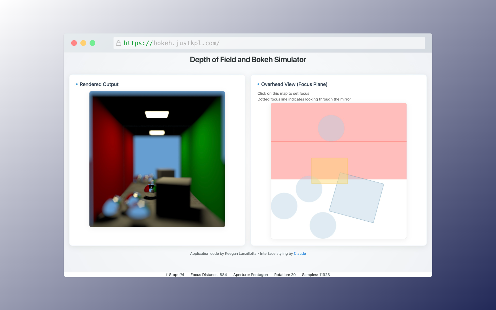

Modelling Depth of Field in a WGSL Path-Tracing Shader
Introduction
How cameras capture coherent images
In order for a piece of photographic film or a digital camera sensor to capture an image of a scene, we must coerce light to arrive on that film or sensor in
an ordered way. Because most sources of light, either surfaces with some form of reflectance or transmission or light emitters themselves, emit
light not in a single direction but dispersed across some solid angle, if we simply exposed a piece of film to a scene it would create a basically uniform
blur of the scene's brightness. For a recognizable image to be captured, some sort of filter must allow only light incident from particular places in space
to arrive at particular places on the image plane. In most imaging systems (including the human eye), this is achieved with refractive optics which bend light coupled with an aperture
which blocks some rays of light while only allowing others to reach the image plane. One measure of the effectiveness of such a system is called the "depth of field",
which is essentially a measure of how much of a scene can be brought to a sharp, recognizable image on the image plane. As will be discussed, it is usually not
possible, and sometimes not desirable, to have the entire scene recreated perfectly on the image plane.
Our ray tracing has so far imitated a pinhole camera with infinite depth of field.
In a pinhole camera, the image plane (holding either the piece of film or digital sensor)
sits behind a very small aperture. Only light from the scene that passes through the "pinhole"
may create an image on the image plane. With an ideal pinhole camera, the hole would
be infinitesimally small so that any point on the image can only be
illuminated by light from a single ray (the ray defined by the point on the image plane and the point of the pinhole).
This ideal pinhole model is attractive for ray tracing. Because only one ray can illuminate a given point,
we can trivially sample points within a pixel on the image sensor, find the ray that can illuminate that point,
and then trace that single ray into the scene to find how it would be illuminated by interacting with objects and
light sources. This gives a realistic rendering that approximates a physical camera and scene.
However, in physical cameras an infinitesimal pinhole is not achievable and in fact
many camera systems use very large apertures to allow more light to hit the image plane.
In a physical camera, the image is captured by essentially integrating (either chemically or electronically)
the flux received on the image plane across the time interval when the shutter is open.
A camera must be held steady while its shutter is open to prevent smearing the image across the image
plane producing a blurry image. Therefore, a shorter, or faster, shutter time is desirable.
To achieve fast shutter speeds the aperture of a camera can be opened wider to increase the amount
of light received from the scene. However, as the aperture widens light from many different angles can hit the same
point on the image plane. Without some way to focus the light, the resulting image captured will be a blurred mess.
This is the role of camera optics. Specifically designed curved translucent materials can cause light to refract at different
angles to focus to a point even with a wide aperture. However, an optical system can only focus light
to a point if it is incident on the optical lens at a particular angle. Light rays from infinitely far objects
will arrive at the lens essentially parallel, while those from closer and closer objects will arrive
at a greater and greater angle relative to each other. Because the lens' refraction depends on the incident angle,
an optical system can only focus light from objects some fixed distance from the lens to a point. The distance that is in focus
can usually be adjusted by moving the optics relative to the image plane. However, this means that only objects that distance from the camera
will be sharp in the captured image. For objects closer or further, their light will not come to a point on the image plane
but will instead end up somewhere in a circle on the image plane. The blur in the captured image is due to light from a single point in the scene arriving across some
area on the image plane. The greater the defocus is for
a given object the blurrier that object will appear in the image.
In photography, it is therefore common for photos to include some sections in focus and others out of focus. This is
a physical effect that people are accustomed to seeing. It is even used for an artistic effect called bokeh, common in
portrait photography (because the subject will be close to the camera and thus the background often very out of focus).
For a realistic ray-traced render it makes sense to implement a model of the wide-aperture optics in physical cameras.
To be exact, the defocus is due to a camera collecting light not at a single point but across a larger aperture.
While the light incident on an aperture from some given distance away can be focused to a point, for other distances it will be possible
for light rays from the same point in the scene to arrive at different places on the aperture and then be bent by the optics
to land on different places on the image plane. Because all light must pass through the aperture, the blurred result
is only a circle if the aperture is a circle. More generally, whatever shape the aperture is will result in defocused light
arriving in a pattern of that shape on the image sensor. This is sometimes used artistically by photographers with interesting aperture shapes.
In addition to depending on the shape of the aperture, the blur also depends on the size. At the limit, an infinitesimal aperture
is a pinhole as discussed above and will cause no blur for any objects. Wider apertures cause larger blurs for nonfocused objects.
For any aperture one plane at the right distance from the image plane will be perfectly in focus.
Because the image plane is sampled with discrete pixels which each have some dimension, when the area the defocused light may hit on the image plane
is smaller than
the size of a pixel, no blurriness is visible in the resulting image. Therefore, there is some range of distances around the perfectly
in focus plane that also appear in focus in the image. The depth of this in focus region is called the depth of field.
Pinhole cameras have infinite depth of field, meaning any distance is perfectly in focus. Larger apertures reduce the depth of field.
The simplest optical system to model is a thin lens, where the lens is taken to essentially just shape light
ideally without being concerned with the intricacies of multiple refractions inside the glass. Often physical lenses
use multiple refractive elements to reduce effects such as chromatic abberation (the separation of colors due to the dependence
of refraction on light's wavelength). However, as our ray tracer does not model different color refraction anyway a simple ideal
thin lens model is sufficient.
Method
To cast a ray into the scene with the thin-lens and aperture model, first a ray is cast from the point on the image plane corresponding to the pixel
being sampled, with subpixel jitter added, through the camera's eye point. This is the same ray that is used in the original pinhole model, and is therefore called the "pinhole ray". However,
to account for the wide aperture, a random point (weighted by area such that any point is equally likely) on the aperture is sampled. The focus distance, i.e.
the distance from the camera at which objects are perfectly focused onto the image plane producing perfectly sharp images, is controlled by
the user according to their desired scene. With a physical camera, this would be set by the photographer by adjusting the lens. Using the user-set focus distance,
the model finds the point of intersection between the pinhole ray and the focus plane, which is the plane defined by being parallel to the image plane,
in the direction the camera is pointed, and offset from the image plane by the focus distance. Any point on this plane will be perfectly in focus. That means
that light emitted from any point on this plane, which hits the aperture anywhere, will be bent by the aperture to hit the same point (this is the definition of focus, that
rays from varying incident angles all converge at a single point). Because the eye point is inside the aperture (the aperture is centered around the eye point), whichever
point on the image plane that light passing through the eye point from the point on the focus plane we sampled will in fact collect all light from that point on the focus plane.
Therefore, a ray drawn from the random point on the aperture to the point on the focus plane will add light to the pixel being sampled. Thus, the model performs the standard
ray tracing but using this new ray, from the random point on the aperture to the point on the focus plane which was hit by the pinhole point.
Because many different rays from the scene can hit the same point on the image plane, many samples are needed for each pixel to
show the physical effects of the wide aperture. To allow for experimentation, several different aperture shapes were implemented. Each shape
required an algorithm for sampling a uniformly random point, although several of the shapes can be made up of triangles allowing for reuse of the
equation for sampling a uniform random point on a triangle.
While in-focus parts of the image are unaffected by the aperture, parts of an image that are defocused will be defocused in the shape of the aperture. The most
famous result of this is that defocused point light sources appear as lights in the shape of the aperture. However, every shape that is defocused is also
distorted in this way, although to a more subtle extent. This makes the ideal aperture shape usually a circle, as it will not distort defocused parts of the image since it
scales constantly in all directions and has no orientation. By contrast, a slit aperture (very wide but very short) will have a hugely noticable impact on out of focus elements,
essentially defocusing them more in the wide direction than the short direction. This results in a stretched image in an almost motion-blur like effect.
While circular apertures introduce the least distortion of an image, it is difficult to physically manufacture a mechanism that can create a circular shape
of varying sizes. Because lenses often need variable apertures to adjust for different lighting conditions or desired depth of field, it is common for
camera lenses to approximate a circular aperture with a series of blades on levers that can move in and out of each other. This creates an N-sided polygon for N blades,
with pentagons, hexagons, and septagons being common. Some lenses even use triangular apertures which require only 3 blades. Finally, some photographers use a lens
or a patterned cutout in front of the lens, which effectively acts like a second aperture, to create artistic defocus or "bokeh" effect in some desired shape. To
allow for this, a star (pentagram) shape aperture was implemented.
In total, the following aperture shapes were implemented:
- circle
- triangle
- square
- pentagon
- hexagon
- narrow slit
- star
Apertures are taken to be openings in a plane parallel to the image plane centered around the eye point. This means aperture points only need to be sampled in 2 dimensions
In some lenses the effective rotational angle of the aperture may change with zoom or focus adjustments, so all shape apertures support an angle parameter to allow arbitrary rotation.
The triangle random sampling was already being used for triangle mesh lights. Real camera apertures are usually implemented with blades as discussed, leading to regular polygons.
Therefore, only equilateral triangles are modelled. This allows for a simplification of the triangle sampling. The rotation is implemented by
multiplying the sampled x-y points by a rotation transforamtion matrix. This technique is used for all sampled apertures.
$$ \begin{bmatrix} \cos{\theta} & -\sin{\theta} \\ \sin{\theta} & \cos{\theta} \end{bmatrix} \cdot \begin{bmatrix} x\\ y \end{bmatrix} = \text{rotated} $$
Implementation
A scene optimized for showing off focus depth was built and the get_camera_ray function was modified
to model a thin lens and shaped aperture.
To make for good demonstrations of variable depth of field and bokeh, the Cornell box with blocks was modified. The tall block was removed, the rear wall replaced
with a mirror, the floor's color replaced with a high-resolution texture to show focus, and several small reflective balls were added. In addition, to aid the user
in interacting with the scene and setting focus distance, a second HTML canvas was added to the interface showing a sketched top down view of the box. This allows
the user to clearly see where the focus plane and depth of field fall in the box, and even supports setting focus distance by clicking in the top down view rather than adjusting
the slider. This makes it easy to focus to a particular edge of one of the objects. To support nice looking screen captures of the render setup, two modes of the interface were
implemnted with styling help from Anthropic's Claude LLM. This LLM was only used to provide a nicer looking frontend on my working skeleton frontend implementation and my
renderer code. By default the page loads in view mode which only shows the results and settings with no way to change settings. By hovering over the top left the toggle switch appears, which can be toggled into edit mode. Edit mode reveals sliders
for each of the parameters the user can control and unlocks setting focus by clicking inside the top down view.
The get_camera_ray function was modified to accept a u32 pointer to the random seed. This allows the function to
perform random samples. Variables were added to the uniforms to allow the javascript (on user's input) to set the focus distance, aperture size (f-stop), aperture shape, and aperture angle.
The get_camera_ray function calls the sample_aperture_pt function which based on user input calls the sample function for the proper shape and then
scales the results to make the aperture the requested size. For simplicity, every shape's sample method (sample_unity_rect, sample_unity_tri, sample_unity_star, etc) takes a
uniform random sample over the shape with its area normalized to 1. This allows the sample_aperture_pt function to provide uniform scaling regardless of shape.
The uniform sampler for a triangle, as discussed in lectures, is implemented by generating barycentric coordinates corresponding to two random variables.
\[ \alpha = 1 - \sqrt{\xi_1}\]
\[ \beta = (1 - \xi_2) \cdot \sqrt{\xi_1}\]
\[ \gamma = \xi_2 \cdot \sqrt{\xi_1}\]
For simplicity, these are mapped to an equilateral triangle with its vertex on the y=0, x>0 line. Because users can change rotation and it is implemented
with the rotation matrix, any base angle can be defined that is most convenient for sampling.
The x-y coordinates are calculated by summing the product of each weight (\( \alpha, \beta, \gamma\)) and its corresponding vertex. The vertices for this triangle
are \[ (r, 0), (\frac{-r}{2}, r\cdot \frac{\sqrt{3}}{2}), \text{ and } (\frac{-r}{2}, -r\cdot \frac{\sqrt{3}}{2}) \] Where r is the radius of the circle which circumscribes the triangle.
The area of an equilateral triangle is equal to \[A=\frac{3\sqrt{3}}{4}\cdot r^2 \] Solving this equation for unity area gives the radius \[r = \sqrt{\frac{2}{3 \sqrt{3}}} = 0.620403239401\].
The square and slit are both implemented with a uniform rectangle sampler which takes an aspect ratio parameter. This sets the ratio between the width and height. For a square, an aspect of 1.0 is used and for
the slit an aspect of 0.3 is used. To sample a unity rectangle, two random variables are sampled, translated to the range [-0.5, 0.5) to be centered on the origin, and multiplied by the aspect and inverse of the aspect to generate x and y values.
The standard rotation is then applied to allow for user control.
\[ x = (\xi_1 - 0.5) \cdot \text{aspect} \]
\[ y = (\xi_2 - 0.5) \div \text{aspect} \]
To sample a uniform circle, the angle $\theta$ can be sampled uniformly over \( [0, 2\pi) \) but the radius must be sampled with a square root. This is because
the derivative of area enclosed by a growing circle with respect to area is nonlinear, it is quadratic. Finally, the radius is divided by the square root of pi to
set the area to 1. These $(\theta, r)$ polar coordinates are converted to (x,y) coordinates. Because the circle has infinite radial symmetry, no rotations are allowed.
\[ \theta = \xi_1 \cdot 2\pi \]
\[ r = \sqrt{\xi_2} \cdot \frac{1}{\sqrt{\pi}} \]
To simplify sampling of the hexagon and pentagon, they are broken down into triangles. The hexagon can be constructed by 6 equilateral triangles with a 60 degree rotation between them and translation off the axis.
A random variable is sampled to choose which triangle to sample within, then a triangle is sampled and the results scaled, rotated, and translated to the correct position
for the constituent triangle. The area of the constituent triangles are scaled down by a factor of 6, requiring a linear scale factor of the square root of 6.
The pentagon is similarly constructed of 5 triangles. However, these triangles must be iscosceles with an angle of 72 degrees not 60 between them. This is done by
sampling the triangle at angle 0 (with its vertex point in the +x direction), linearly scaling into the iscosceles triangle, then rotating and scaling to the correct spot.
The linear scale factor in this case is the square root of 5.
The star is implemented as a pentagram, which consists of a central pengagon and 5 triangles attached to its 5 sides. Becuase the sides must line up, the central pentagon
is scaled so its side length matches that of an equilateral triangle with unity area. Then the pentagon's non-unity area is calculated, and increased by 5 (the area of the 5 added triangles summed) to
find the total area. A random variable is sampled and scaled by the total area to then decide if the point is in the pentagon \( (\text{sample} \lt \text{pentagon area} ) \) or in the triangles. If it is
in one of the triangles, the sample with the pentagon area subtracted from it rounded down specifies which triangle the point falls in. Then, either a pentagon point or triangle point is sampled.
If a triangle point is sampled, it must be translated by the apothem of the pentagon summed with the radius of the triangle so it lines up correctly. The correct rotations are made and
the sampled point returned.
With this simple modification to the get_camera_ray function, and sampling with the correct aperture shape specific samplers, realistic depth of field and bokeh are realizable.
Results
With the ray tracer modified to support physical apertures in various shapes, renderings were created with realistic "bokeh". As desired,
when the aperture is set to be small the depth of field is large. Small apertures result in narrow depths of field. Additionally, the depth of field increases
with the focus distance. That is, the same aperture size focused near and far will show smaller and greater depths of field, respectively. Because large apertures
have more area the camera can cast rays through, more samples were required to produce realistic renderings with wide open apertures. However, the thin, translucent look
of the bokeh matches the effect found in real photography.
Several renderings are presented below, with the specific settings shown in the images. Some of these are compared with real photographs from wikimedia commons to show the physical effect's similarity
Deep Focus
This use case should be similar to the original pinhole model, but with subtle blur

The focus is set to the near balls so their reflections (effectively quite far away) are slightly blurrer even at f/22. The circular aperture introduces no distortion to the blur

Moving from an f/22 to f/8 aperture, the depth of field is reduced but not enough to make a big difference for the spheres in the front.
However, their reflections which are effectively very far away, become much more defocused with this change.
For comparison, a triangular aperture at the same f/8 stop and focus distance. Here the triangle hardly distorts beyond creating
triangles out of point lights.

At such deep focus, the difference between the distortions provided by the pentagonal aperture and the circular aperture are negligible.

It is possible to introduce the fun star shaped lights without significantly distorting the rest of the scene with a reasonable f-stop.
Strong Bokeh
At the opposite end of the spectrum, keeping the depth of field as shallow as possible to get lots of bokeh. All of the
reflections of the light source in the little spheres act close to point light sources if sufficiently defocused to give nice bokeh effects.

With the aperture wide open at f/1.4, a highly exagerated bokeh effect is created. Even the relatively large ceiling light's reflection on the back wall looks like an almost
perfect hexagon. The middle of the front spheres which is being focused on is sharp, while the spheres just in front and behind it are heavily distorted and the hexagon bokeh is visible. Even the shapes
of the spheres that are out of focus appear somewhat hexagonal.

Using the triangular aperture with a slightly more modest f/2 shows the same behavior of the front spheres (though, because they're more out of focus here and because
a triangle is further from a circle than a hexagon is, the balls are more clearly distorted into triangular-like shapes). Additionally,
the walls seem to bend in slightly due to the triangle shaped distortion.

For comparison, here is an actual photograph ("30 Days of Gratitude- Day 27" by aussiegall licensed under CC BY 2.0)
showing very narrow depth of field coupled with huge bokeh discs which are not quite circular due to a slightly non-circular aperture. It appears this camera's aperture is a rounded polygon
A slightly less strong bokeh effect but with the star aperture shows how this creative effect is often used.
Even though the front spheres are mostly spherical (they have only a slight star shaped character), the small glint of light
on their surface takes on a very strong star shape.
Highly Distorting Apertures
The most heavily distorting aperture tested was certainly the slit. In general, the further an aperture was from round the
more noticably it distorted the out of focus image.

The slit aperture shape turns defocused point lights into rectangles in its direction but also stretches the entire
unfocused portion of the image in that direction too. It almost has a motion blur like effect.
It might be possible with this effect to create an image that imitates the tracking photo of fast moving object images, where the subject is
held perfectly steady in the camera's frame so is sharp but they are moving relative to the background so the surroundings have motion blur.

While the square is not as distorting as the slit, it still clearly makes anything defocused more aligned with its orientation. The balls all seem blockier and even
the walls look distorted
Mid-Range Blurs
Some renderings with middle-ground amounts of bokeh. The subject is clearly highlighted but the unfocused image is not so distorted as to be
distracting.

At f/4 there's some pleasing blur but it is far from overwhelming and the image looks overall realistic.

At the same f/4 aperture, when the focus is moved further into the scene, the depth of field is widened. Howver, the out of focus spheres here are even more out of focus than the spheres in the previous
image with the tighter depth of field. This is becase the depth of field is not equally centered around the focus distance, it is wider on the far side of the focus distance than on the close side. Objects closer
than the focus distance become defocused very quickly.
Discussion
A physically accurate depth of field and bokeh effect were demonstrated based on a user-controlled aperture. The available shapes are fairly realistic, though as discussed
lenses usually use blades and they are often curved, producing curved convex polygons rather than these regular polygons. Additionally, actually bokeh is impacted by
fine intricacies of the lens itself. Tiny scratches or warps in the lens glass can be seen in the bokeh, and to recreate this realistically some sort of physically measured
map from physical lenses is neccesary. Additionally, often desired "swirly" bokeh is not possible with controlling the aperture alone. Rather, it requires using
aspheric lenses which present astigmatism effects. This would require a more complicated model than the thin lens model used here but would be interesting to implement
and provide a greater sense of photorealism.
For a more realistic lens model, it would be interesting to trace paths separately for red, green, and blue light. This would
allow for effects such as chromatic abberation to be modeled. However, because professional lenses are usually carefully designed to
minimize these types of distortion, the current model does a fine job of imitating professional photography. Chromatic abberation
or other lens distortions common on cheaper optics might give the render a more real, gritty feel as if taken by an amateur photographer
with cheap equipment.
.jpg){kind=link}